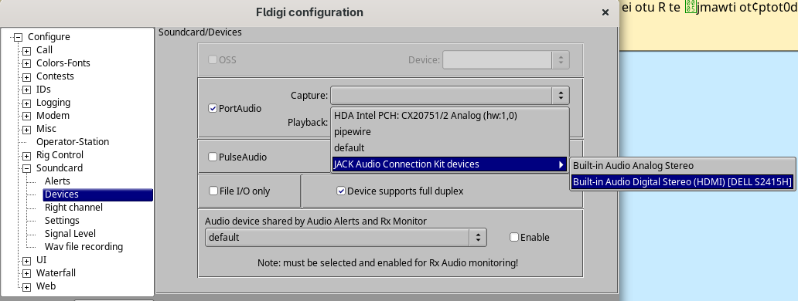

Getting audio into Fldigi
Fldigi doesn't care where the sound comes from. If it can hear the signal, it can decode it. Here are the ways in, from the usual to the downright spooky. Pick one, then do the setup at the bottom.
1. Get the software
Download Fldigi and Flamp from W1HKJ: w1hkj.com. Both are free and run on Windows, Mac, Linux and Raspberry Pi. On Linux they're usually in your package manager too.
2. Where Fldigi listens
Whatever way you choose below, you'll tell Fldigi where to listen in the same place:
Configure → Configuration → Soundcard → Devices → Capture
Pick the device your audio is coming in on, click Save, then Close.

3. Pick your way in
A radio with a USB port
Many newer rigs have a sound card built in. Connect the USB cable, and the radio shows up on the computer as a sound device with a name like USB Audio CODEC. Choose it as the Capture device in Fldigi (see above).
A cable from any receiver
Run a cable from the receiver's headphone, line-out or data jack to the computer's line-in or mic jack. A cheap USB sound card dongle works great if your computer has no input jack. Interfaces like a SignaLink do the same job. Choose that input as the Capture device in Fldigi.
An SDR
Run your SDR program (SDR++, SDR#, SDRuno, GQRX and so on) in USB mode on 7.121 MHz. Then send its audio output into Fldigi with a virtual audio cable:
- Windows: VB-Audio Virtual Cable. Set the SDR's output to
CABLE Inputand Fldigi's capture toCABLE Output. - Mac: BlackHole. Use it as the SDR's output and Fldigi's input.
- Linux: often no cable needed. In Fldigi's Capture list, pick your speakers (under
JACK Audio Connection Kit deviceson PipeWire systems, as in the picture above). Or, inpavucontrol, set Fldigi's recording source to theMonitor ofyour speakers.
A cheap RTL-SDR dongle needs direct sampling mode or an upconverter to hear 40 meters.
Spooky trick: no radio at all
Borrow someone else's receiver over the internet. WebSDR (websdr.org) and KiwiSDR (rx.linkfanel.net) list hundreds of receivers you can tune from a web browser. Pick one a few hundred miles from the net, tune it to 7.121 USB, and route the browser's sound into Fldigi with the same virtual cable as an SDR.
Spookiest trick: just listen
Set Fldigi's capture device to your computer's built-in microphone and hold it near the radio's speaker. In a quiet room, MFSK32 copies this way surprisingly well. It's a good way to save a night when the cable has gone missing.
4. Set up Fldigi
- Tune to 7.121 MHz USB. (On a WebSDR or SDR, set the mode to USB as well.)
- Choose the mode: Op Mode → MFSK → MFSK-32.
- Click the waterfall at 1000 Hz. The red cursor sits there and Fldigi decodes what's under it.
- Turn RxID on (the RxID button near the top right). Fldigi will jump to any signal that announces itself, even if the net changes modes or drifts off 1000 Hz.
- Leave TxID off if you're also a transmitting station.
5. Set the level
Too much audio is just as bad as too little.
- Good: the waterfall background is dark blue with a few speckles, and signals show up as bright tracks.
- Too hot: the whole waterfall is yellow or red. Turn the receiver's volume or the computer's input level down.
- Too quiet: the waterfall is black even on loud signals. Turn it up.
- Turn off any noise reduction, "enhancements" or automatic gain on the computer's input. They smear digital signals.
Waterfall settings (bottom left of Fldigi)
Two number boxes sit at the bottom left, under the waterfall. Hover over a number to see which box is which.
- Left box, Upper Signal Level: about
-25 - Right box, Signal Range: about
65 - Next to them is a button that reads
x1. Click it until it readsx2. If it goes past, keep clicking. It comes back around.
6. Flamp and the pumpkin
Flamp (the Spooky Wire)
Start Fldigi first, then Flamp. Flamp listens through Fldigi on its own. On the Receive tab the file shows up as it arrives, block by block. If some blocks are missing, keep listening; the relays and fills will usually bring them in. When it's complete, select it and click Save.
The Great Pumpkin
The pumpkin is an MFSK picture. Fldigi pops open a picture window on its own and paints the image line by line. That takes about 4 minutes, so don't touch the waterfall while it's painting. You'll need the picture to open the Crypt.
Where it goes: Fldigi saves every received picture on its own as a .png file, named with the date and time, in its images folder:
- Linux:
~/.fldigi/images(a hidden folder in your home directory) - Windows:
C:\Users\you\fldigi.files\images
Saving it yourself from the picture window is a good backup, and saves you a hunt.
Picture leaning sideways? That's your sound card's clock drifting a little. You can straighten it in Fldigi's picture window by clicking on a corner of the image you can see. That only fixes the view, not the saved file. A small lean won't hide the word anyway.
No picture window? Look under Configure → Modems → MFSK and make sure picture receive isn't turned off.
Practice before Friday
The BDN Net meets every Friday on 7.121 MHz at 9:00 PM Eastern (check-ins 8:45). Try your setup there first, and bring questions to the Monday Ham Radio Hub Zoom call or the Spooky Net announcement thread.